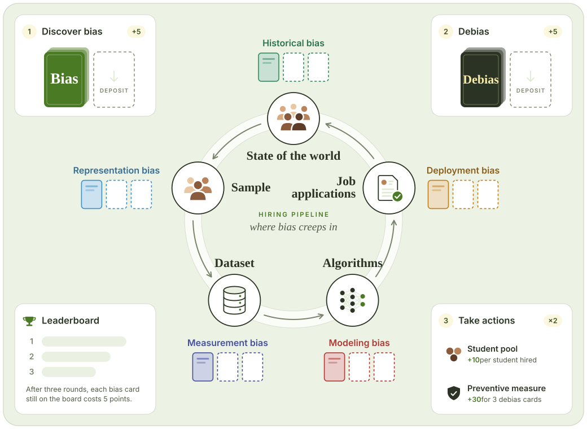
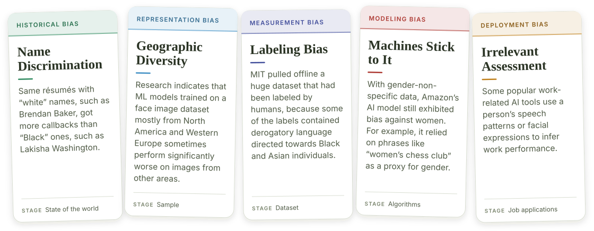

Equality Engine: A Board Game for Spotting and Fixing Machine-Learning Bias
Machine learning now helps decide who gets hired, but its biases are hidden and socio-technical, so they are hard to spot or prevent without the right literacy. In Equality Engine, players act as engineers debugging a hiring algorithm: they trace where bias creeps in and debate how to fix it.
![Equality Engine at a glance, in three panels. The problem: bias creeps into every stage of a hiring algorithm, from the state of the world (historical bias) to the sample (representation), dataset (measurement), algorithms (modeling), and job applications (deployment). The game: two players act as engineers who debug it together, one describing a bias card while the other guesses its type, over three rounds of Discover Bias, Debias, and Take Actions. The outcome: students' median self-reported knowledge of ML bias rose from 16.5 to 24 out of 28.](../Images/equality-engine-concept.svg)
The Game
Equality Engine is a cooperative two-player board game that runs in the browser on PlayingCards.io.

Its five bias types adapt Suresh and Guttag's framework of bias across the ML life cycle, and most of its 20 bias cards come from research on algorithmic hiring, rewritten without ML jargon.

A session runs three rounds, and in every round each player moves through three phases. A leaderboard of the top three past scores adds a goal without pitting players against each other directly.
1. Discover Bias
Explain a bias card to your teammate without naming its category. If they identify the type of bias, the team earns 5 points.
2. Debias
Draw a debias card and answer its open question together, such as which experts to consult. A thoughtful answer earns 5 points.
3. Take Actions
Make two moves: help a BIPOC student get a job (10 points), remove a bias card, pass a debias card, or trade three for a preventive measure (30 points).
Methods
- Transformational game design Chose the game's learning goals from the literature, then refined the board and cards through rounds of internal playtesting and a pilot study so that players without ML training could follow them.
-
Playtests over Zoom
Pairs of post-secondary students played three rounds, then talked about what they liked, what they didn't, and what they would change. Pairs were matched by race so that players felt comfortable discussing sensitive experiences of bias.
N = 12 STEM students · 12+ hours of gameplay - Pre- and post-game surveys Measured self-reported ML bias knowledge and self-efficacy before and after play, along with how useful and enjoyable the game was.
- Mixed-methods analysis Scored every bias guess as correct or incorrect, thematically analyzed the debiasing discussions, gameplay talk, and interviews, and tested the pre–post change with a Wilcoxon signed-rank test.
Key Findings
Knowledge rose after one session
Students' self-reported knowledge of ML bias rose significantly after playing, from a median of 16.5 to 24 out of 28.
Debiasing talk was the highlight
Most players called the open-ended Debias discussions the most compelling part, and pairs with no ML background proposed fixes as well as experienced pairs did.
Some biases are harder to spot
Historical bias was the easiest to identify, while representation bias accounted for 40% of all wrong guesses.
Social play made it easy
Social interaction and immersion predicted how easy the game felt, and pairs that planned ahead together, such as by building preventive measures, topped the leaderboard.
Design Implications
- Use games for exposure: concrete examples and a shared vocabulary help people notice ML bias, even when it affects their own communities.
- Build in collaboration: peer teaching in pairs can make up for gaps in individual ML knowledge.
- Scaffold critical reflection: the frustration of misidentifying biases early on, worked through in later phases, can drive transformative learning.
- Measure the learning process, not just outcomes: self-reports skewed positive, while gameplay showed confusion and frustration that the surveys missed.
My Role
Co-first author with Dilruba Showkat (equal contribution). I co-designed and evaluated the game while working remotely with Prof. Alexandra To at Northeastern University in 2022.
Related
Cite
Dilruba Showkat, Lingqing Wang, Laveda Chan, and Alexandra To. 2025. Equality Engine: Fostering Critical Machine Learning Bias Literacy Through a Transformational Game. Proc. ACM Hum.-Comput. Interact. 9, 2, Article CSCW068 (April 2025), 31 pages. https://doi.org/10.1145/3710966